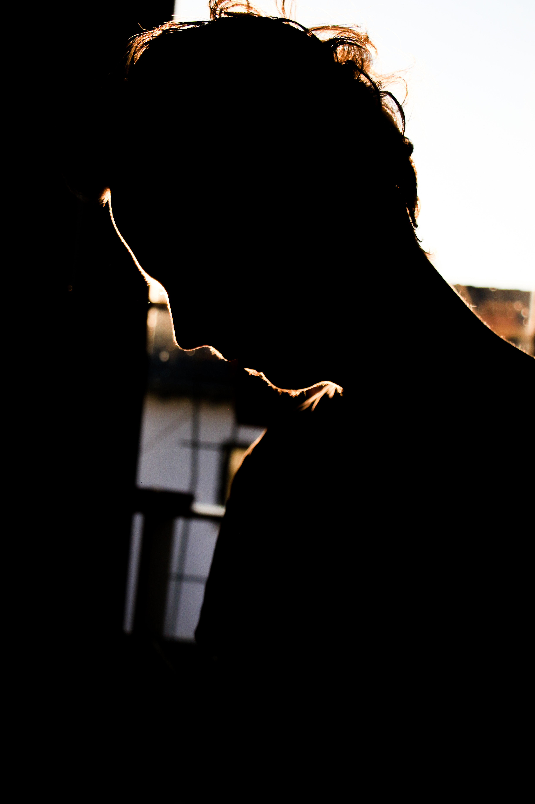
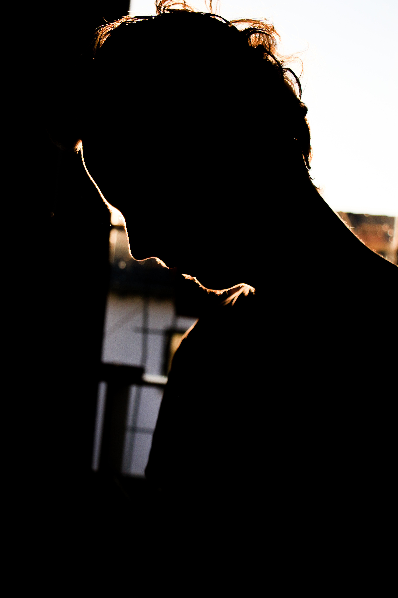

Semesterprojekt: Medienkozeption
Im Rahmen des Faches Medienkonzeption sollten wir im Sommersemester 2021 einen Kurzfilm drehen. Dabei waren wir in der Umsetzung und Konzeption komplett frei. Mit meiner Gruppe aus drei weiteren Kommilitonen haben wir uns gemeinsam für einen interaktiven Film entschieden, bei dem der Zuschauer selbst dazu beiträgt wie die Story endet. Unser Genre geht dabei in die Richtung eines Zero-Budget Thrillers. Durch die herrschende Coronapandemie, wollten wir keine weiteren Statisten mit einplanen, um alle beteiligten zu schützen. Zunächst erstellten wir ein Diagramm um den Überblick zu behalten welche Möglichkeiten der Zuschauer haben soll. Als wir mit diesem zufrieden waren, erstellten wir unser Skript und Szenenplanung.
Nach dem Dreh der Szenen ging es an die Postproduction. Bei der wir als Gruppe im ständigen Kontakt standen, da niemand aus unserer Gruppe Vorerfahrung im Filmschnitt hatte. Um ein gutes Nutzererlebnis zu haben, luden wir die einzelnen Sequenzen auf YouTube hoch und implementierten sie in eine Website, in der man je nach Entscheidung auf die nächste Filmsequenz geleitet wird.
Entwicklung interaktiver Anwendungen
Auch in dem Fach Etwicklung interaktiver Anwendungen hatten wir viele kleine Projekte. Unter anderem auch diese Website und weitere Code Aufgaben, bei denen wir lernten mit HTML, CSS und TypeScript umzugehen. Unsere Endabgabe stellte dabei ein TicTacToe Spiel dar, bei dem wir mehrere Bedingungen erfüllen mussten. So sollte das Spiel drei "Schwierigkeits-Grade" haben, bei dem sich die Anzahl an Spielfeldern ändert, dafür durften aber keine erneuten HTML-Seiten geladen werden. Außerdem sollte es einen Computerzug geben der gegen den Spieler spielt. Hierbei ist zu erwähnen das der Computer nicht dazu lernen muss.
Ich habe hier das TicTacToe Spiel verlinkt
Blender
In dem jetzigen, zweiten Semester wurden wir in die Grundlagen von Blender eingeführt. Hierbei lernen wir wöchentlich weitere Funktionen, so dass wir am Ende des Semesters in der Lage sind eine eigene 3D Animation zu erstellen.
Woche 1 - Grundlagen
{kind=link}
Woche 4 - Shading
{kind=link}
Woche 6 - Animationen
Fotografie
Mein Hobby ist die Fotografie. Ich bin noch lange nicht da wo ich gerne sein möchte, aber ich bin ambitioniert und motiviert mich immer weiterzubilden.


 
